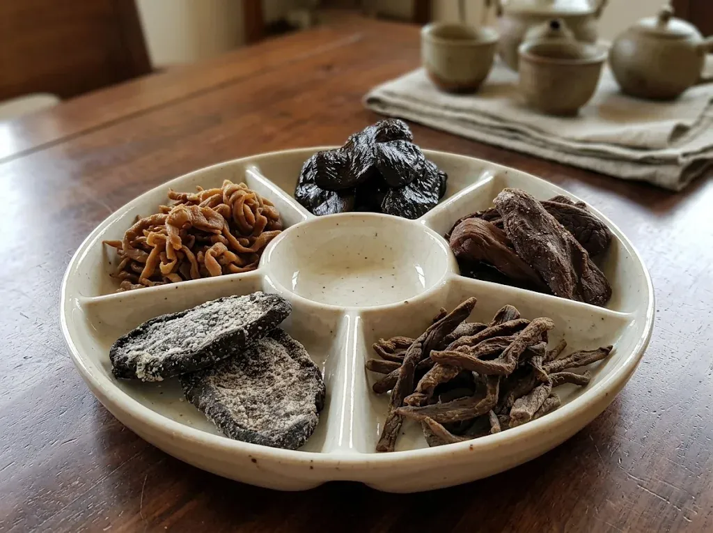
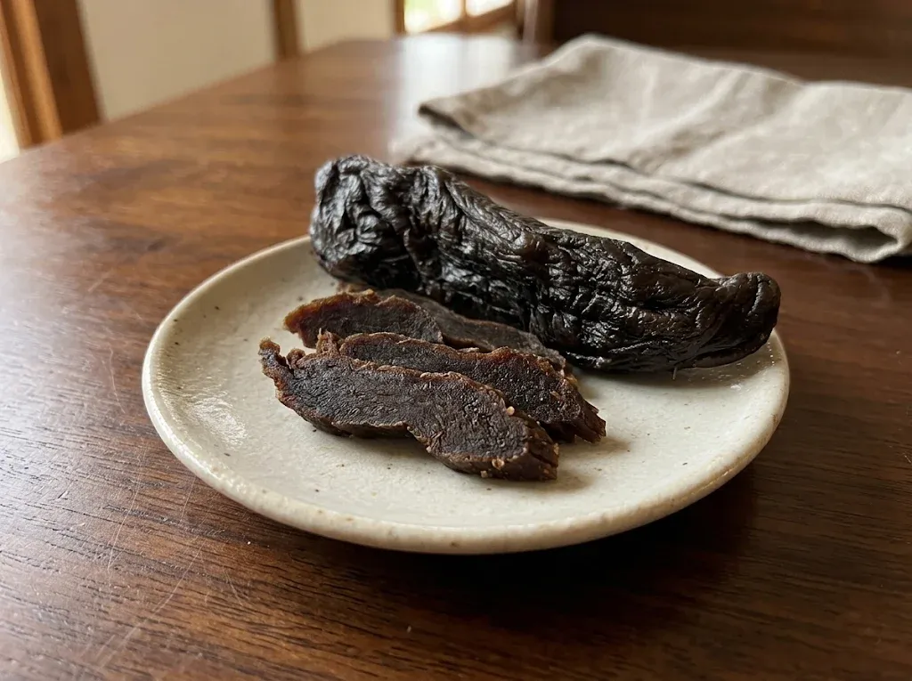
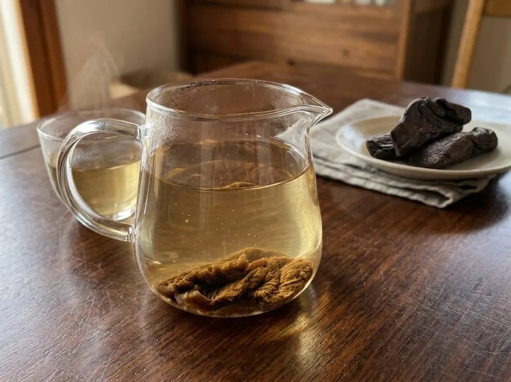
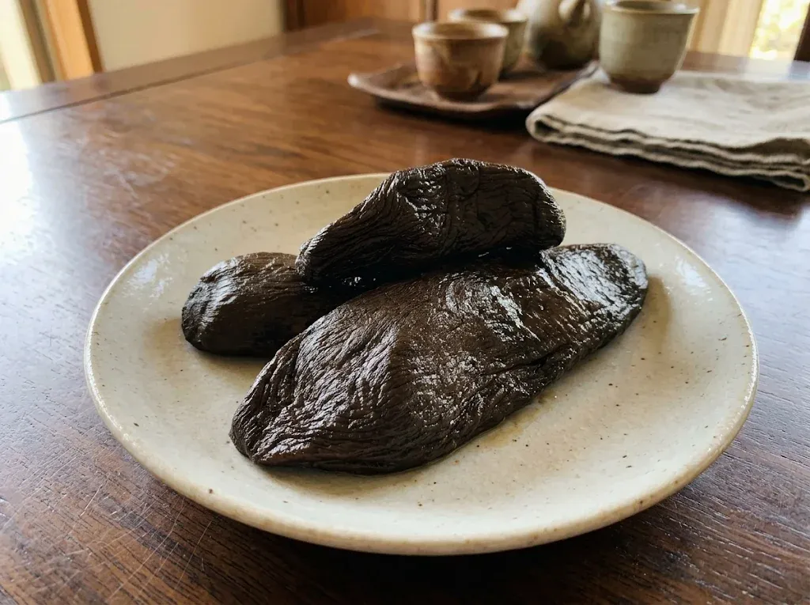

農家辨別指南
真假老菜脯，
農家教你一眼看懂。
黑金老菜脯動輒放了十年、二十年，市面上價格高昂，作假、染色的劣質品更是滿天飛。我們整理了農家幾十年來摸過、聞過、煮過的實戰經驗，教大家6個最直白的辨別秘訣！

訣竅 01
顏色一定深，但不一定是死黑
真正陳年的老菜脯，顏色一定很深，但絕非像墨汁那樣死黑！根據各家醃製手法的不同，許多老菜脯表面其實呈現非常溫潤的「深褐色」或「烏褐色」。如果整條烏黑得發亮、黑得很不自然，反而要特別留心是否經過人工刻意上色。
訣竅 02
香味極厚，連厚真空袋都擋不住
老菜脯跟新鮮菜脯的味道完全是兩回事！那是一種經過歲月淬鍊的「陳年老味」，尾韻多半帶著一股像梅乾菜的沈穩香氣（所有十字花科植物長年發酵陳化，最終都會轉為這類香氣）。這股香氣穿透力極強，即便用厚厚的食品真空袋密封，放個幾天香氣依然會隱隱穿透出來。
不過味道是很主觀的，因為蘿蔔品種、產地、收成季節、醃製手法與天然菌種不同，老菜脯的香氣光譜非常豐富：有的帶點像老罈酸菜的微酸、有的帶蜜餞香、醬香味、醬油陳香、柴魚香、甚至淡淡的羊肉香、牛肉香或老酒香……這些農家全都親自聞過、親眼見過，都是純天然發酵的正常豐富風味。
訣竅 03
切開看斷面：內外顏色必須相近
把老菜脯拿刀切開，是最直接的「照妖鏡」！真正經過十年以上歲月滲透的老菜脯，內部肉質的顏色跟外皮非常接近，有些甚至因為中心水分完全吸飽陳化，裡面的肉色還比外皮更深。
如果切開來，發現「外皮黑、裡面卻泛白或呈淺黃色」，通常只有兩種可能：第一種是年份根本不夠老（陳放不到十年，尚未熟透）；第二種就是最常見的黑心手法——用醬油或色素快速浸泡染色。這種染色的菜脯聞起來可能沒異狀，但只要一下鍋煮湯，立刻原形畢露！

訣竅 04
下鍋煮不掉色，湯色清澈呈淡茶色
老菜脯變黑，是蘿蔔裡的天然糖分、胺基酸與含硫化合物，在漫長時光中慢慢結合的「非酵素性褐變（梅納反應）」——原理就像香蕉皮自然變黑、黑蒜頭熟成一樣，它不是外加色素，也不是花青素，所以絕對不會煮一煮就褪色！
拿真老菜脯煮雞湯或切塊熱水沖泡成菜脯茶，湯色是清澈透亮的「琥珀淡茶色」，而且菜脯本身依然保持深褐色；如果是用醬油泡出來的假老菜脯，一煮下去黑醬色全退進湯裡，湯變得渾濁死鹹，原本黑黑的菜脯反而明顯褪成白淺色！品質極佳的老菜脯，因蘿蔔本身糖分足，煮出來的湯還會泛著一層天然焦糖甜香，入口鹹甘溫潤、喉韻生津。

訣竅 05
質地軟潤，指甲就能輕易剝下一小塊
越新鮮的菜脯，纖維越扎實堅韌、怎麼捏都硬挺挺的；但陳放了十幾二十年的老菜脯，纖維早已被鹽分與酵素分解熟成，質地變得鬆軟濕潤，光用手指甲就能輕易剝下一小塊。
即使是客家乾式醃法、表面結了一層厚白鹽巴的老菜脯，雖然外觀乾癟，但用指甲依舊能輕易掐下。拿老菜脯切塊泡熱水喝時，表面若因長年熟成而有微微崩解化開的現象，也是完全正常的真品表現。
訣竅 06
表面泛自然油光（客家濕儲法）
這項特徵特別常見於客家濕式醃製法（放在陶甕、瓷甕或玻璃甕中，浸潤在飽和原汁裡陳化）。當陳放超過 15 年以上，浸泡在甕底濃郁原汁裡的老菜脯，表面在光線下會微微反光，透出像塗了薄油一樣漂亮的黑金色澤。
經驗豐富的農家在陳放期間，每隔一段時間會把甕裡的菜脯「上下翻動交換」，讓每一條都能均勻吸飽原汁，整甕養出來的老菜脯條條黑亮油潤、香氣飽滿。

農家真心話
買一點夠吃就好，甚至自己存一甕更安心！
以上六個方法是我們世代務農摸出來的心得，但現代食品加工技術日新月異，作假的手法也層出不窮。我們衷心建議消費者：老菜脯有需要、買一點夠家裡偶爾燉湯就好。即使真的不慎買到年份不足的，損失與影響也有限；千萬不要為了投資或聽信神效，花大筆金錢盲目大量收購，其中的風險真的不小！
更棒的選擇是：買一甕無防腐劑的新鮮日曬菜脯，放在家裡自己陳年！現在推廣無添加防腐劑的做法，沒有化學藥劑抑制酵母菌，菜脯在良好通風、陰涼乾燥的環境下自然轉黑的速度其實非常快。只要環境顧好，放個十來年，你也能親手養出一甕香醇甘甜、貨真價實的自家傳家黑金！